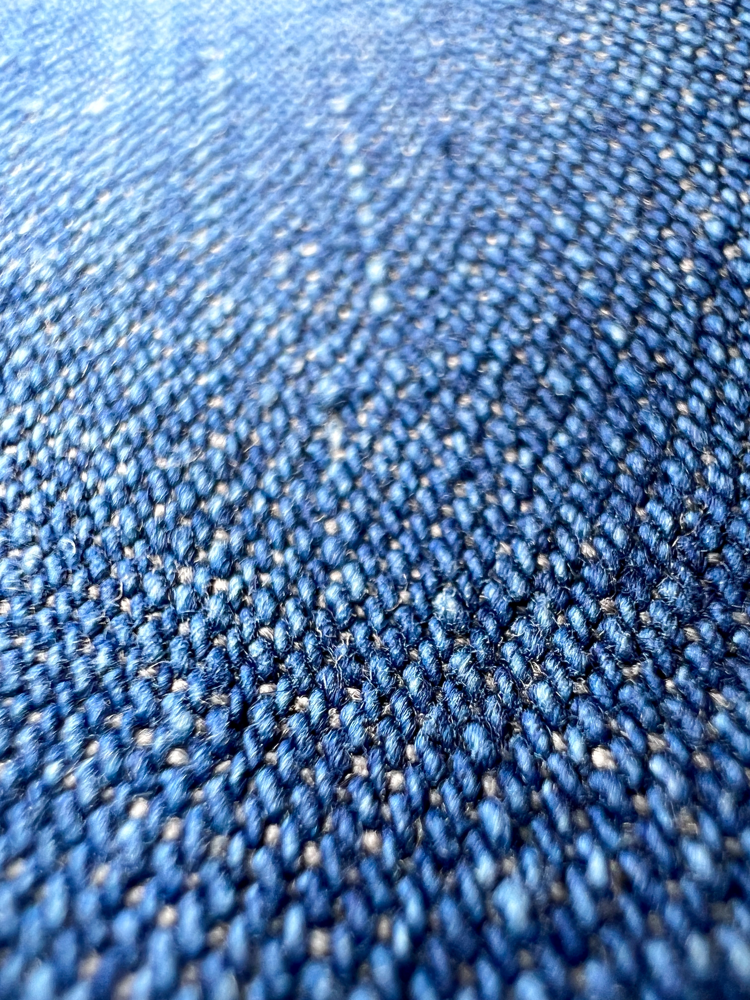
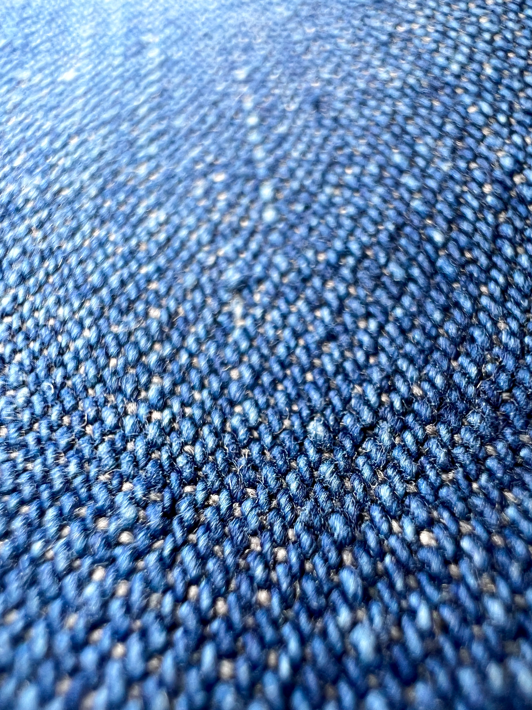

-U.S.NAVY Sailor Denim Pants-
このパンツは1930年代のアメリカ海軍で使用されていたデニムパンツになります
大きな特徴としては腰から裾にかけて徐々に広がるシルエットです。
その他には前面にある大きなポケットが特徴的です。背面には前所有者の名前？が書かれています。
このパンツには二種類の型があり、アウトサイドにシーム(縫い目)があるタイプとないタイプがあります。
シームがないタイプは巻きパンと言われて、シームがあるタイプに比べて数が少なく貴重です。
普通のデニムに比べてライトオンス(薄い生地)となっているので夏でも履きやすいのがいい点です。


 
